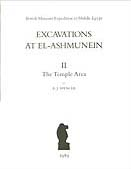
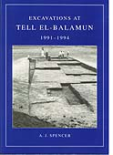
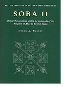

|
Publication of Results
|
Excavations
at el-Ashmunein
The interim
reports on the El-Ashmunein excavation, published in the British
Museum series of Occasional Papers, have now been largely replaced
by the final publications listed below.
Spencer,
A.J., Excavations at El-Ashmunein, I: The Topography of the Site
(1982)
Spencer, A.J., Excavations at El-Ashmunein, II: The Temple Area
(1989)
Spencer, A.J., Excavations at El-Ashmunein, III: The Town
(1993)
Bailey, D.M. Excavations at El-Ashmunein, IV: Hermopolis Magna,
Buildings of the Roman Period (1991)
Bailey, D.M. Excavations at El-Ashmunein, V: Pottery lamps and
glass of the Late Roman and Early Arab Periods (1998)
Snape, S.R., A Temple of Domitian at El-Ashmunein (BM Occasional
Paper 68, 1989)
|

|
|
Excavations
at Tell el-Balamun
For the current
excavation at Tell el-Balamun, two of the final reports have appeared:
|
|
Spencer,
A.J., Excavations at Tell el-Balamun, 1991-1994 (1996).
|

|
| Spencer,
A.J., Excavations at Tell el-Balamun, 1995-1998 (1999). |
|
|
Excavations
in Sudan
Interim reports
on the work in the Sudan have been published in the Newsletter of
the Sudan Archaeological Research Society and latterly in the magazine
Sudan and Nubia. A final report on excavation at Soba has
also been produced, together with a volume on the Begrawiya-Atbara
survey, and on the excavations of the cemetery at Gabati.
|
Welsby,
D.A. Soba II: Renewed Excavations within the metropolis of the
Kingdom of Alwa in Central Sudan (1998)
Mallinson, M., Smith, L.M.V., Ikram, S., Le Quesne, C. and Sheehan,
P., Road Archaeology in the Middle Nile, I: The SARS Survey from
Bagrawiya to Atbara 1993 (1996)
Edwards, D.N., Gabati. A Meroitic, Post-Meroitic and Mediaeval
Cemetery in Central Sudan (1998 |
 |
|
|